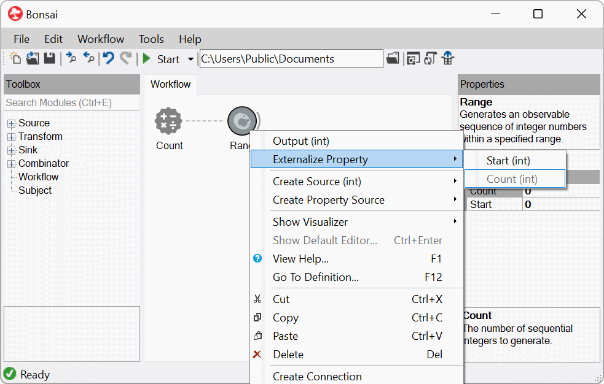

Property Mapping
Each Bonsai operator exposes a set of configuration properties that allow you to parameterize that operator's behaviour. These parameters can be configured manually from the editor Properties panel. However, there are times when you may need to map the properties of an operator dynamically from the output of other observable sequences.
As an example, imagine you wanted to continuously playback a sound WAV file to the speakers at a specified volume level. You might design a workflow that looks like the following:

Using the ConvertScale operator you could set the volume manually by changing its Scale parameter.
Now consider a variation of this workflow where the playback volume needs to be modulated continuously depending on some other variable, for example the horizontal position of the mouse cursor as it moves across the screen.
A simple way to compute the desired scale value would be to rescale the X coordinate of mouse movements to a range between zero and one:

However, how would you now connect the sequence of scale values computed from the mouse position to changes in the Scale property of the ConvertScale node?
Property mapping operators allow you to do exactly this. They are operators that take a single input sequence and react to notifications from that sequence by changing the values of the specified properties in the subsequent node. There are three types of property mapping operators, described below.
| Mapping Type | Description |
|---|---|
 |
Externalize one or more operator properties. The properties can be optionally named and will show up in the Properties panel for node groups. |
 |
Map multiple properties simultaneously. Individual members of input data items can be mapped to different properties in the target node. |
 |
Map multiple properties synchronized with input notifications. Same as above, but property changes are applied only when a notification is transmitted to the target node. |
Externalized properties
The ExternalizedMapping operator allows you to create externalized properties. The easiest way to initialize the mapping is from the right-click context menu when a single node is selected. Selecting a property from this menu will create or update the externalized mapping node. Multiple properties can be externalized from the same node.

Warning
In any one workflow, it is not possible to have more than one externalized property with the same name. When externalizing multiple conflicting properties, you can use the DisplayName property of the externalized mapping to provide distinct unique names for each property. It is also possible to specify different category or description strings to the externalized property for documentation purposes.
When externalized properties are nested inside an operator group, for example inside a GroupWorkflow, they will be exposed as member properties of the node group itself. This means that when the group node is selected, all named externalized properties will show up in the Properties panel.
Mapping a sequence to a property
After an operator property has been externalized, you can connect any sequence which is compatible with the data type of the property to the mapping node. When a connection to a source sequence is established, the externalized property will be promoted to a PropertyMapping operator.
Now every time the source sequence emits a new notification, the mapping operator will react by changing the target property to the incoming value.

The connection between the property mapping and its target node only affects the state of properties. The behaviour of the operator will otherwise remain unaffected, since the subscription to the mapping is not considered as a proper upstream source. This is indicated in the editor by the dashed line linking the property mapping operator to its target.
Warning
Because property values are updated independently, this means that values can change even while the target operator is reacting to notifications from other nodes. Care must be taken to ensure that changing the property state in this way does not break the behaviour of the workflow.
Specifically, some operators respond to changes in their parameters only at specific moments. For example, the parameters of the Timer operator must be set before the observable sequence is initialized. In this case, the input to the externalized property needs to be emitted immediately during the subscription phase for the mapping to work.
Mapping multiple properties
Multiple properties can be mapped simultaneously from the same source sequence when using PropertyMapping. You can select which properties to map by using the editors available in the property grid. For each mapped property you must specify a source selector, i.e. an expression specifying which members of the input data type are used to assign values to the mapped property.
Note
If the type of the selected member does not match the type of the property, a conversion is attempted. If no compatible conversion is available, the compiler checks whether it is possible to construct the corresponding data type from the selected members. For example, it would be possible to map to a Point type by selecting two numeric values from the source sequence. In this case, the values would be used to construct a new point instance by assigning them to the X and Y parameters of the type constructor.
In each property mapping operator, all mapped properties are updated at the same time every time the source sequence sends out a new value. It is also possible to connect property mapping operators to multiple target nodes.
Mapping properties synchronously
Sometimes you need to synchronize property updates with the data flow, i.e. you do not want the property mapping operator to change the property values outside of notifications emitted by the source sequence.
For example, imagine a transform operator which is converting a source sequence from one format to another, where the format specification is given by a set of operator properties. You may need the target format to change dynamically from time to time, but you may also need to guarantee that parts of the format specification do not change while the operator was converting some other input. The InputMapping operator allows you to do this by synchronizing property updates with input notifications.
Fundamentally, the InputMapping operator works exactly the same way as PropertyMapping, but now the connection from the mapping operator to its target node is done through the upstream sources. In this case, only values from the source sequence can be used to map properties in the target node. However, it is possible to specify which specific member of the original data source will be selected as input to the target node by setting the Selector property.
Whenever the original input sequence sends out a new data item, all the specified property mappings will be updated at the same time before this item is finally allowed to go through and notify the target. In this way, you can be sure that no property changes are performed between upstream notifications.